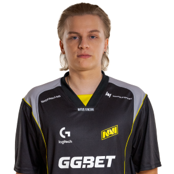
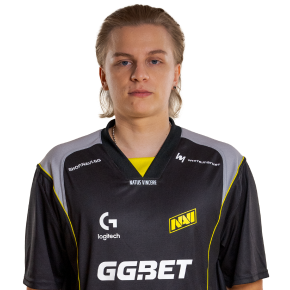

Будь частиною легендарної команди. Слідкуй за турнірами, новинами та мерчем.
 

У жовтні 2009 року, коли комп'ютерний спорт стрімко набирав популярності й неухильно зростала кількість чемпіонатів із великими призовими, меценат із Казахстану Мурат «Arbalet» Жумашевич на турнірі Intel Extreme Masters в Дубаї озвучив ідею створення кіберспортивної організації. Arbalet поставив собі за мету заснувати професійну команду, для якої він стане головним спонсором: надасть гравцям майданчик для тренувань і візьме на себе фінансові питання, починаючи із зарплат і закінчуючи оплатою перельотів.
Першим на пропозицію відгукнувся starix — саме перед цим відомим гравцем з Counter-Strike було поставлено завдання сформувати зіркову п'ятірку. 17 грудня 2009 року навколо команди з Counter-Strike почалося будівництво кіберспортивної організації Natus Vincere (з лат. — «народжені перемагати»). Спочатку назва NAVI була запозичена з фільму «Аватар», а свого остаточного вигляду набула після конкурсу на кращу розшифровку абревіатури, проведеного серед фанатів. До першого складу NAVI увійшли Edward, markeloff, starix, ceh9 і Zeus, а менеджером став ZeroGravity.
У 2010 році NAVI завоювали 12 медалей, 8 з яких — золоті, і в них з'явилась ціла армія фанатів. Успіхи гравців відзначили на порталі hltv.org: у щорічному рейтингу опинилися Edward (5-те місце), starix (4-те місце), а markeloff був визнаний найсильнішим гравцем сезону. Zeus, у свою чергу, отримав звання найкращого капітана. У жовтні 2010 року NAVI стали мультигеймінговою організацією, створивши склад із Dota. Спочатку у п'ятірці були Goblak і Mag, але згодом у 2011 році зібрався легендарний склад: Dendi, XBOCT, LighTofHeaveN, ArtStyle та Puppey.
У 2011 році клуб заснував команди з FIFA, StarCraft II та League of Legends. Нові підрозділи не виправдали надій і згодом були розформовані. Винятком став Yozhyk, один з найсильніших гравців світу в FIFA, який ще довго тішив уболівальників перемогами в складі NAVI. У його скарбничці понад 20 медалей зі змагань різного рангу.
Головною кіберспортивною подією 2011 року став The International — турнір в Dota 2 з рекордним на той час призовим фондом в розмірі $1 000 000. Варто відзначити, що на виставці gamescom в Кельні ця гра Valve вперше була представлена широкій аудиторії.
У Кельні Народжені Перемагати зробили справжню сенсацію: без проблем подолали груповий етап та продовжили переможну ходу в сітці плей-офф, де в гранд-фіналі впевнено обіграли фаворита на цьому турнірі — EHOME. Успіх організації не залишився непоміченим: XBOCT, Dendi, Puppey, ArtStyle і LighTofHeaveN стали кумирами мільйонів і навічно вписали свої імена в історію кіберспорту.
Цей рік виявився дуже важливим в першу чергу для CS-складу. Команда, як і раніше, демонструвала висококласну гру, кілька разів перемогла на великих турнірах, а також ставала срібним призером. Однак перехід в нову дисципліну був неминучий: в повному складі команда NAVI до кінця 2012 року почала виступати в Counter-Strike: Global Offensive.
Dota-склад продовжував тішити вболівальників. У 2012 році Natus Vincere вдалося вийти у фінал шести великих турнірів і двічі стати чемпіонами! Також Народжені Перемагати вийшли вдруге поспіль у фінал The International, але на цей раз не зуміли обіграти інший китайський колектив — Invictus Gaming. Втім, на подальших результатах це не позначилося: гравці NAVI залишалися серед кращих на професійній сцені.
Важливим кроком стала поява NAVI ще в одній MOBA — League of Legends. Клуб підписав договір з перспективною європейською командою. Вона боролася в цілому ряді чемпіонатів, але до кінця року припинила своє існування.
Згодом Народжені Перемагати неодноразово поверталися на The International. Найбільш драматичним став двобій NAVI зі шведською п'ятіркою Alliance у 2013 році — цей матч називають одним з найбільш яскравих за весь час змагань у Dota 2.
Утримували планку й гравці в Counter-Strike. У червні 2013 року було сформовано склад NAVI у World of Tanks з гравців The RED Rush. Перший кубок танкісти завоювали вже у вересні, отримавши перемогу на чемпіонаті в Сіетлі.
За чотири наступні роки танкова дружина Natus Vincere виграла більше ніж 20 міжнародних нагород і $350 000 на турнірах у Китаї, Польщі, США та в інших країнах. На жаль, у червні 2017-го шляхи Natus Vincere і World of Tanks розійшлися через стрімке згасання кіберспортивної складової дисципліни.
У 2014 році було оголошено про створення другого, американського, Dota-підрозділу Natus Vincere. Обидві команди взяли участь у The International 2014, але посісти місце серед найкращих не змогли.
Через кілька місяців після чемпіонату склад NAVI.US був розформований, а в головному ростері відбулися зміни.
2015 рік для організації Natus Vincere склався досить вдало: були засновані команди з Heroes of the Storm, Hearthstone і League of Legends. В іграх компанії Blizzard Народжені Перемагати здобули відмінні результати: HotS-підрозділ пройшов у півфінал BlizzCon, а шведський легіонер команди з Hearthstone Ostkaka став чемпіоном світу, вигравши $ 100 000. Незважаючи на успішні виступи, роком пізніше обидві команди були розформовані.
У League of Legends справи йшли набагато гірше: європейський підрозділ проіснував недовго, а виступи СНД-складу від сезону до сезону погіршувалися. Коли завершився річний спліт 2017 року, організація вирішила зосередити увагу на інших популярних дисциплінах. Всього за 2015 рік було завойовано більш нiж 40 нагород, а загальна сума призових перевищила $ 1 000 000!
2016 рік для команди з CS:GO почався з перемог на DreamHack ZOWIE Leipzig 2016 і Counter Pit Season 2, проте потім був доволі тривалий спад. Щоб повернутися на п'єдестал пошани, було прийнято рішення замінити легендарного Zeus молодим і талановитим Олександром «s1mple» Костилєвим. Олександр досить швидко адаптувався до нового колективу, і вже до кінця року NAVI стали чемпіонами ESL One: New York. У США s1mple завоював першу нагороду MVP у своїй кар'єрі!
Dota-склад зазнав значних змін, після невдалого виступу на The International 2016 було прийнято рішення сформувати новий колектив навколо Dendi і GeneRaL. До кінця грудня фанатам був представлений новий ростер: до «ветеранів» приєдналися європейські легіонери Pajkatt, rmN- і Biver. Загалом у 2016 році NAVI стали призерами на більш як 35 чемпіонатах і заробили близько $ 1 400 000.
2017-й склався для організації не кращим чином: команди з Counter-Strike: Global Offensive і Dota 2 не змогли повернути колишню форму, внаслідок чого сталися чергові зміни в їхньому складі. В кінці липня до команди з Dota 2 приєдналися Crystallize і RodjER, замінивши європейських легіонерів, а обов'язки капітана став виконувати SoNNeikO. Оновлений склад заграв новими фарбами: хлопці дійшли до півфіналу DreamLeague Season 8, завоювали бронзу MDL Macau, а також тріумфально обіграли у фіналі Adrenaline Cyber League команду Virtus.pro.
Після серії невдач, які переслідували гравців з CS:GO, GuardiaN вирішив покинути організацію та приєднатися до FaZe Clan. У колективі на той момент не було лідера, тому повернення Данила «Zeus» Тесленка фанати сприйняли з радістю. Проте команда продовжувала зазнавати труднощів, і до кінця року сталася ще одна заміна: seized взяв паузу, а місце в головному складі зайняв electronic. Ці зміни позитивно вплинули на результати п'ятірки: були здобуті важливі перемоги у відбіркових матчах великих турнірів.
У 2017 році також були створені команди з Quake Champions і Paladins. Клуб Natus Vincere на полях нового шутера від id Software представляв Антон «COOLLERZ» Сіньгов — багаторазовий призер міжнародних змагань із Quake III Arena. Перше золото для NAVI Антон завоював вже через кілька днів після початку співпраці, а на чемпіонаті світу він посів місце в трійці кращих. На жаль, згодом належного розвитку Quake Champions не відбулося: кількість чемпіонатів стрімко зменшувалася, тому в травні 2018 року організація Natus Vincere оголосила про розпуск підрозділу.
Захищати кольори NAVI в Paladins стали п'ять європейців, які раніше виступали за WASD Sports. Склад NAVI.Paladins є одним з найсильніших в дисципліні: гравці тричі ставали чемпіонами світу, заробивши в сукупності $ 175 000.
Команду з Dota 2 в першій половині 2018 року переслідували невдачі: після низки поразок зі складу вийшов RodjER (трансфер у Virtus.pro) і SoNNeikO. Оговтатися від втрати талановитих сапортiв NAVI не вдалося. Результати з Lil і LeBron — новачками команди — були не найкращими, і після поразки у відкритих відбіркових матчах The International 2018 було прийнято рішення перевести всіх діючих гравців в інактив.
У 2018 році в Natus Vincere з'явився підрозділ із Playerunknown's Battlegrounds — популярної гри в жанрі Battle Royale. Вже у дебютному турнірі команді підкорився LAN-фінал першого сезону Global Loot League з призовим фондом у $ 50 000. У Мінську, де проходив фінальний для СНД кваліфікаційний етап чемпіонату світу, NAVI знову здобули перемогу, підтвердивши статус кращої команди регіону. На PUBG Global Invitational 2018 у режимі від першої особи NAVI посіли четверте місце, заробивши $ 60 000.
Команда з CS:GO також продовжила тішити фанатів перемогами і значно зміцнила свої позиції на світовій арені. NAVI завоювали бронзові медалі на чемпіонатах ELEAGUE Major: Boston 2018, ESL Pro League Season 7 і ELEAGUE CS:GO Premier, срібні — на DreamHack Masters Marseille 2018 і SL i-League Season 4, а також поповнили колекцію трофеїв трьома кубками: SL i- League Season 5, CS:GO Asia Championship і ESL One: Cologne 2018.
Після вражаючої серії успішних виступів команда закріпилася на другій сходинці світового рейтингу CS:GO, а Олександр «s1mple» Костилєв був відзначений п'ятьма нагородами MVP — він став першим гравцем в історії CS:GO, якому вдалося отримати це звання без перемоги на турнірі. На чемпіонаті світу FACEIT Major: London 2018 Народжені Перемагати знову довели, що є однією з кращих команд світу: NAVI зупинилися за крок від чемпіонства, поступившись у фіналі Astralis.
1 вересня 2018 року клуб представив оновлену команду в дисципліні Dota 2: вперше за 8 років історії NAVI до складу п'ятірки не ввійшов Dendi. Ставка була на молодих гравців: до Crystallize приєдналися Blizzy, MagicaL і Chuvash, а капітаном команди став SoNNeikO. Відбулися зміни й на тренерському містку: новим наставником гравців став Mag.
Найбільш важливою подією для кіберспортивного клубу NAVI в 4-му кварталі 2018 року став перехід до нового власника. Олександр Кохановський ухвалив рішення продати NAVI, розуміючи, що виведення клубу на новий рівень потребує серйозних інвестицій. Тоді ж, у 4-му кварталі 2018 року мажоритарним власником NAVI став Максим Кріппа. Максим — український бізнесмен та венчурний інвестор з активами в IT, Game Development та Real Estate.
2019 рік був насиченим і продуктивним. Кіберспортивний клуб NAVI виступав у багатьох дисциплінах, починаючи з CS:GO і Dota 2, закінчуючи іграми в жанрі Battle Royale. Команда з CS:GO пережила ряд злетів та падінь. Народжені Перемагати входили в топ на різних чемпіонатах, але водночас не могли похвалитися стабільною грою. З цієї причини колектив покинули легендарний Zeus та Edward, поступившись місцем Boombl4 i GuardiaN. Змінивши посаду спортивного директора, тренером став B1ad3, разом з яким команді потрібно було підкорювати нові вершини.
У 2019 році, завдяки отриманим інвестиціям від нового власника, кіберспортивний клуб NAVI запустив унікальний проєкт, спрямований на розвиток молодих кіберспортсменів: NAVI Esports Camp. За його підсумками мала сформуватися NAVI Junior — команда-академія, зібрана з найсильніших юніорів.
2019 рік для NAVI.Dota 2 теж був неоднозначним. Команда потрапила на The International, зайняла там 13–16-те місця, зазнала ряд кадрових змін і довгий час не могла прийти до своєї кращої форми, проте закінчила рік на мажорній ноті, ставши учасником DreamLeague Season 13.
У 2019-му під жовто-чорним прапором NAVI почала виступати команда з Rainbow Six Siege. Дебют не був успішним, і влітку під тегом NAVI вже боровся склад MnM Gaming. Рішення виявилося вдалим: команда перемогла в кількох регіональних чемпіонатах, а також в десятому сезоні Pro League, вигравши $ 100 000.
Виправдали очікування також підрозділи клубу в PUBG і Apex Legends: обидві команди демонстрували високі результати на чемпіонатах і тішили глядачів відмінною грою. Крім того, у NAVI знову з'явився представник у Quake Champions, куди з посади тренера Apex Legends перейшов cYpheR.
У 2019 році NAVI закрили підрозділи з FIFA і Paladins, однак загалом рік можна назвати плідним.
Цей період був складним не тільки для NAVI, але й для всієї кіберспортивної спільноти: відбулося лише кілька запланованих LAN-турнірів, а потім змагання перемістилися в онлайн внаслідок COVID-19. 2020-й почався зі змін CS:GO-складу Natus Vincere: до команди приєднався молодий гравець Perfecto, який замінив GuardiaN. Оновлений ростер завоював право боротися в фіналі BLAST Premier Spring і посів друге місце на ICE Challenge 2020, а потім вирушив на IEM Katowice 2020. Там йому не було рівних: через десять років після неймовірної перемоги на IEM Season IV Народжені Перемагати знову підняли над головою кубок і забрали винагороду в розмірі $ 250 000.
Клуб також продовжив формування NAVI Academy. На піку своєї форми молоді гравці займали 37-й рядок рейтингу HLTV.org. В кінці року випускник академії B1t зіграв за основну команду з CS:GO, а згодом став її постійним учасником.
Через незадовільні результати в Dota 2 часто замінювали гравців команди. Поворотний момент стався у вересні: Народжені Перемагати запросили під своє крило вже зіграний колектив FlyToMoon. Фанати тепло прийняли нових гравців, а ветерани клубу були раді знову побачити GeneRaL і RodjER. Справи поступово пішли вгору, і вже в грудні команда стала переможцем OGA Dota PIT Season 4.
У 2020 році клуб знову відкрив Fortnite-підрозділ, запросивши молодих гравців Putrick і 7tor, а також зробив крок до мобільного кіберспорту — восени наші ряди поповнила команда з PUBG Mobile. Рік для цих дисциплін закінчився на мажорній ноті: за підсумками декількох місяців фортнайтери на двох заробили понад $ 25 000, а команда з PUBG Mobile стала переможцем EMEA League.
Попри всі складнощі, які принесла пандемія COVID-19, у 2021 рік кіберспортивний клуб NAVI вступив з великими планами й чітко поставленими цілями. Народжені Перемагати були націлені як на закріплення успіхів, так і на досягнення нових висот — тег NAVI почав з'являтися не тільки на екранах моніторів, але й на мобільних пристроях. Wild Rift, Brawl Stars і Free Fire — ці ігри встали в один ряд з іншими кіберспортивними дисциплінами у сфері інтересів NAVI.
Крім того, у клубі з'явився VALORANT-підрозділ, інші ж продовжили гідно виступати як в СНД, так і на міжнародній арені. Найбільших висот у 2021 році досягла команда NAVI з Counter-Strike: Global Offensive. Перемога на BLAST Premier: Global Final 2020, StarLadder CIS RMR 2021 і Intel Extreme Masters XVI — Cologne, а також перше місце у міжнародному рейтингу команд — результат, яким варто пишатися!
Також у 2021 році в Києві було збудовано високотехнологічний офіс з ігровими пентхаусами, а штат клубу зріс у 4 рази.
Підтримка України через благодійні заходи:
Проведення благодійних шоу-матчів для збору коштів на підтримку України.
Збір для проєкту "Землячки" та турнір "BORN TO BE BRAVE", який зібрав понад $520,000.
Об'єднання з інфлюєнсерами та іншими професіоналами для збору коштів на підтримку України.
Зняття документального фільму "Покидаючи дім":
Фільм розкриває історії фанатів, змушених залишити рідну землю через війну.
Поставка 220 авто для фронту:
Спільно з Акордбанком передано 220 повністю укомплектованих автомобілів на фронт для підтримки військових.
Зміни в дисциплінах:
Розпуск російських складів PUBG Mobile та Mobile Legends.
Відмова від команди League of Legends: Wild Rift через нерентабельність дисципліни.
Створення жіночих команд:
Представлення жіночої команди NAVI Javelins (CS:GO), яка стала однією з найкращих у світі.
Створення жіночої команди NAVI Celestials у VALORANT, яка посіла третє місце в регіоні EMEA.
Партнерство у новій франшизній Лізі VALORANT:
NAVI стали одним із 30 клубів-партнерів франшизної Ліги VALORANT від Riot Games.
Запрошення чемпіонського складу FunPlus Phoenix на чолі з ANGE1, який виграв європейський чемпіонат G-Loot VALORANT Cash.
Зміни в складі CS:GO:
Випадання Boombl4 зі складу та заміна на sdy.
Перемога на турнірі BLAST Premier: Spring Finals 2022 та 5-8 місце на IEM Rio Major.
Перехід npl (випускник NAVI Junior) на місце sdy.
Особисті досягнення гравців:
s1mple став найкращим гравцем року, встановивши новий світовий рекорд.
B1t посів 16-те місце в рейтингу найкращих гравців року.
B1ad3 був названий тренером року, Perfecto — опорником року.
Команди Dota 2 та інші дисципліни:
Команди з Dota 2, Brawl Legends та Halo Infinite брали участь у головних чемпіонатах.
Загалом рік був складним для цих дисциплін.
2023 рік для NAVI:
2023-й рік видався насиченим для NAVI: ми перейшли на нову версію Counter-Strike та суттєво оновили ростер, розширили кількість європейських складів, а також відкрили підрозділи в кількох нових дисциплінах.
Перехід на CS2 та зміни в складі:
Ключовим моментом для клубу став перехід із CS:GO в CS2, що відзнаменував початок нової ери дисципліни.
Влітку склад NAVI залишили Perfecto, electronic і npl, поступившись місцем новим гравцям — Aleksib, jL і iM.
Осінь принесла ще одну важливу зміну: легендарний гравець клубу s1mple перейшов в інактив, передавши естафету молодому таланту w0nderful.
Оновлений ростер посів 3–4 місце на престижному турнірі BLAST Premier: World Final 2023.
Досягнення в CS:GO:
У CS:GO NAVI встановили низку вражаючих рекордів, ставши єдиною командою, яка брала участь у всіх Major-турнірах, тоді як s1mple взяв рекордну кількість MVP-медалей.
На рахунку команди 132 виступи на турнірах ESL і 27 перемог, що принесло нам друге місце у світі за виграними призами та неперевершену популярність серед фанатів: 4 з 5 матчів з найбільшою кількістю переглядів у дисципліні — за участю гравців NAVI.
Інші дисципліни:
В інших дисциплінах наші склади також виступали стабільно. NAVI зіграли на чемпіонатах світу з Brawl Stars, Clash of Clans, Halo Infinite і VALORANT.
Стратегічні зміни в кінці року:
Рік завершився стратегічними змінами: розформуванням складів з Halo Infinite, Brawl Stars і жіночого ростера Celestials з VALORANT.
Водночас тег NAVI повернувся до двох дисциплін - PUBG Mobile і StarCraft 2, а оновлена команда з PUBG складається виключно з українських гравців.
Благодійні ініціативи NAVI в 2023 році:
Протягом 2023 року NAVI брали активну участь у благодійних ініціативах, підтримуючи Україну. Найбільш значуща з них - проєкт RECONSTRUCTED, у якому взяли участь фанати кіберспорту, гравці клубу, українські коментатори, GG.BET і Maincast.
Разом нам вдалося зібрати $44 000 на відновлення комп'ютерного класу Михайло-Коцюбинського ліцею, зруйнованого ударом ракети.
За свої благодійні ініціативи впродовж року NAVI отримали новий трофей від United24, підписаний президентом України Володимиром Зеленським.
2024 рік для NAVI:
2024-й вийшов дуже насиченим для кіберспортивного клубу NAVI. Наша команда CS2 вкотре вписала себе в історію дисципліни, у нас з'явилися нові склади, включно з Tekken та Warzone. Також Народжені Перемагати успішно виступили на Esports World Cup, де клуб посів восьме місце та заробив $600 000.
Досягнення команди CS2:
Наша команда з CS2 відкрила рік тріумфом на чемпіонаті PGL Major Copenhagen 2024, де у фіналі з рахунком 2 : 1 обіграла FaZe Clan та забрала додому $500 000.
Звання найсильніших у дисципліні наші гравці згодом захистили на турнірі в рамках кіберспортивного фестивалю Esports World Cup 2024: $400 000 за перемогу над G2 Esports з аналогічним рахунком.
Вже ближче до кінця року наша команда взяла першість на ESL Pro League Season 20 та Intel Extreme Masters Rio 2024.
Рейтинг та індивідуальні нагороди:
Ще одним значущим досягненням варто назвати перший рядок рейтингу найкращих команд від HLTV.org, який ми тримали протягом 18 тижнів! Портал справедливо відзначив успіхи NAVI, поставивши iM на 16-те, w0nderful – на 11-те, b1t – на 9-те та jL – на 5-е місце топа найкращих гравців року.
До того ж ми стали командою року, а наші гравці здобули низку престижних індивідуальних нагород.
Популярність та інші дисципліни:
Крім того, NAVI стали найпопулярнішим колективом за загальною кількістю переглядів матчів за 2024 рік.
У 2024 році клуб був представлений і в низці інших відомих дисциплін. Ростери NAVI непогано виступали в онлайн на турнірах з Valorant, брали участь у чемпіонатах світів з дисциплін PUBG, PUBG Mobile, Clash of Clans та Warzone й відзначилися певними успіхами в Brawl Stars.
Зміни в складі:
Наприкінці року NAVI також ухвалили рішення розпустити команди з Apex Legends та жіночого CS, щоб зосередити увагу на нових дисциплінах у 2025-му.